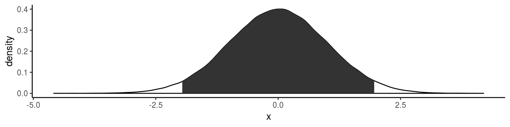

Japan.R 2018 LT
関数魔改造講座
atusy
2018-10-20
atusy

- R歴5年
- 11月から Julia 始めました!
- 初Japan R
- Tokyo R 73で
ggplot2で図を並べる 話をした - (株) 蒜山地質年代学研究所
- 所在地は岡山市内
- 業務
- 地質試料の化学分析
- データ解析用Rパッケージ開発
blogdownで blogしてます- Atsushi776 on Twitter


関数改造事始
改造は人の業


関数改造パッケージ
hoxo-m/fixer
ラッパー関数で改造
関数の構成要素を魔改造
| 構成要素 | > identity | |
|---|---|---|
| formals | 引数のリスト | function (x) |
| body | 関数内のコード | x |
| environment | 関数を格納した変数の居場所 | <environment: namespace:base> |
+ 名前空間に殴り込み
assignInNamespace()
@exportされていない変数も弄れるlockBinding()/unlockBinding()
を操ることが必要な場合あり- 殴り込んだ変数を参照する
全ての変数が影響を受ける - 元に戻すにはRを再起動する
- パッケージを遡及して
殴り込む必要があったらどうする？
formals を弄って
assignInNamespace() せずに
内部変数も含めて挙動を弄ろう
package:japanr2018
インストール & 読み込み
中身
namespace:japanr2018 に隔離
## function(a) a + b
## <bytecode: 0x3e05f08>
## <environment: namespace:japanr2018>## [1] 1## function(a) a + b
## <bytecode: 0x3e3d700>
## <environment: namespace:japanr2018>japanr2018::f は上書きされない
既存の引数を弄る
formals() で関数の引数を確認する
## Dotted pair list of 1
## $ a: symbolヘンなリストだけどリストのノリで弄れる。
弄るにはformals<-
names<- みたいに使える
## [1] 1## a
## 1既定値として値を代入
## $a
## [1] 1## [1] 2Yes!!
既定値として表現を代入
## $a
## [1] 0.610131884 0.779403595 -0.389964283 -1.260034533 0.575623665
## [6] 0.100286101 -1.384933473 -1.636788662 -0.004826588 -0.877808839## [1] 1.6101319 1.7794036 0.6100357 -0.2600345 1.5756237 1.1002861
## [7] -0.3849335 -0.6367887 0.9951734 0.1221912## [1] 1.6101319 1.7794036 0.6100357 -0.2600345 1.5756237 1.1002861
## [7] -0.3849335 -0.6367887 0.9951734 0.1221912Hmmmm……
alist を使って再挑戦
## $a
## rnorm(10)## [1] 0.02051215 0.13345849 2.22872709 0.75858825 -0.47583738
## [6] 0.34240806 -0.33738288 1.43258280 1.29084232 2.29054137## [1] 0.04730271 1.96813411 1.44947915 0.44212364 2.38355763 2.29736429
## [7] 0.43131459 1.97121596 0.94542949 3.19341382Yupppyyyyy!!
?formals にも載ってる
You can overwrite the formal arguments of a function (though this is advanced, dangerous coding).
f <- function(x) a + b
formals(f) <- alist(a = , b = 3)
f # function(a, b = 3) a + b
f(2) # result = 5
引数を追加する
確認
## function(a) a + b
## <bytecode: 0x1e6d850>
## <environment: namespace:japanr2018>## [1] 1b を a と同じ長さの乱数にしたい
## [1] 1.144505 2.496546 3.241338 4.622167 5.033269 6.275035 7.527989
## [8] 8.931250 9.123033 10.406532+ じゃなくて * がいい
## [1] 1応用
ggplot2::stat_density から
stat_ci を作る
## function (mapping = NULL, data = NULL, geom = "area", position = "stack",
## ..., bw = "nrd0", adjust = 1, kernel = "gaussian", n = 512,
## trim = FALSE, na.rm = FALSE, show.legend = NA, inherit.aes = TRUE)
## {
## layer(data = data, mapping = mapping, stat = StatDensity,
## geom = geom, position = position, show.legend = show.legend,
## inherit.aes = inherit.aes, params = list(bw = bw, adjust = adjust,
## kernel = kernel, n = n, trim = trim, na.rm = na.rm,
## ...))
## }
## <bytecode: 0x40301f8>
## <environment: namespace:ggplot2>stat_density() の中で呼び出される StatDensity の参照先を、 ggplot2::StatDensity から、引数の StatDensity = StatCI に変えてしまう。
library(ggplot2)
stat_ci <- ggplot2::stat_density
formals(stat_ci) <- c(formals(stat_ci), StatDensity = ggAtusy::StatCI)
ggplot(data.frame(x = rnorm(1e5)), aes(x)) +
geom_density() +
stat_ci()
skimr::inline_hist() のビン数を変更
一行の文字列でヒストグラムを作ってくれるが、
ビン数は内部変数の options が固定している
## ▇▁▁▂▅▅▃▁myopt <- rlang::env_clone(skimr:::options)
inline_hist <- skimr::inline_hist
myopt$formats$character$width <- 20
formals(inline_hist)$options = myopt
inline_hist(iris$Petal.Length)## ▁▇▂▁▁▁▁▁▁▁▃▃▃▅▂▃▂▁▁▁S3メソッドを手抜きして作る
print.atusy <- function() {
cat("Printing atusy class object.\n")
NextMethod()
}
formals(print.atusy) <- formals(print)
structure(1, class = "atusy")## Printing atusy class object.
## [1] 1
## attr(,"class")
## [1] "atusy"S3メソッドは最低でも、
総称関数と同じ引数を持たなければならない
formals<- を使えば総称関数の引数を丸々引き継げる